Capacitors
Fig. 1 shows a portion of a thin, infinite, nonconducting sheet with a uniform (positive) surface charge density σ.
Let P be a point at a distance r from the sheet. We wanto to calculate E at P. A convenient Gaussian surface is a closed cylinder with end caps of area A and height 2r, arranged to pierce the sheet perpendicularly. From symmetry, E, must be perpendicular to the sheet and hence to the end caps, its magnitude will be the same at P and P'. Since the charge is positive E is directed away from the sheet, and thus the electric fielf line pierce the two Gaussian end caps in an outward direction. Because E and dS are at right angle the flux through the curved surface of the Gaussian cylinder is zero.
The flux through the two plane ends is
φ = ∮E ⋅ dS + ∮E ⋅ dS = 2EA
The net charge enclosed by the Gaussian cylinder q = σA. Thus by Gauss's law
2EA = σA/ε0 ⟶ E = σ/2ε0
E is independent of the distance of the point from the sheet. E is same for all points on each side of the plane. An infinite sheet of charge cannot exist physically. However this result is true even for sheets of finite size if the points chosen are not near the edges and the distance r is small compared to the dimension of the sheet.
Two large conducting plates make up a parallel-plate capacitor. The left plate has a positive charge +Q and the right plate has negative charge −Q. The area of each plate is A, and the plates are separated by a distance d.
Field due to two parallel sheets of charge
A parallel plate capacitor is a device that consists of two plane parallel infinite sheets of charge with equal and opposite charge densities +σ and −σ are shown in Fig.2. The magnitude of electric field on either side near a plane sheet of charge is as calculated in the previous section E = σ/2ε0 and acts perpendicular to the sheet, directed outward (if charge is +) or inward (if charge is −).
At a point P1 in between the sheets, the fields due to two sheets will be equal in magnitude and have the same direction. The resultant field in the gap is
E = E1 + E2 = σ/2ε0 + σ/2ε0 = σ/ε0
This field is directed away from the positively charged plate and toward the negatively charged plate.
At an outside point P2 the fields will be equal in magnitude and opposite in direction.
E = E1 − E2 = σ/2ε0 − σ/2ε0 = 0.
A capacitor stores electric charge. Each capacitor plate carries a charge of the same magnitude, one positive and the other negative. Experiment shows that when the magnitude Q of the charge on each plate is doubled, the magnitude ΔV of the electric potential difference is also doubled, so Q is proportional to ΔV: Q ∝ V. We can introduce a proportionality constant C, which is termed the capacitance of the capacitor.
C = Q/ΔV
the SI unit of capacitance is the coulomb per volt (C/V). This unit is called the farad (F), named after the English scientist Michael Faraday (1791–1867). One farad is an enormous capacitance. Usually smaller amounts, such as a microfarad (1 μF = 10−6 F) or a picofarad (1 pF = 10−12 F), are used in electric circuits. The capacitance reflects the ability of the capacitor to store charge, in the sense that a larger capacitance C allows more charge Q to be put onto the plates for a given value of the potential difference ΔV.
The voltage(difference) ΔV between the plates at distance ℓ from each ohter, is defined as the line integral of the electric field over a line (in the z-direction) from one plate to another
where we have taken the path of integration to be a straight line from the positive plate to the negative plate following the field line.
The capacitance is defined as C = Q/V. Substituting V above into this equation
Note that C depends only on the geometric factors A and ℓ. The capacitance C increaseslinearly with the area A since for a given potential difference ΔV, a bigger plate can hold more charge. On the other hand, C is inversely proportional to ℓ, the distance of separation because the smaller the value of ℓ, the smaller the potential difference ΔV for a fixed Q.
The Physics of random-access memory (RAM) chips
The ability of a capacitor to store charge lies at the heart of the random-access memory (RAM) chips used in computers, where information is stored in the form of the “ones” and “zeros” that comprise binary numbers. Figure 1 illustrates the role of a capacitor in a RAM chip. The capacitor is connected to a transistor switch, to which two lines are connected, an address line and a data line. A single RAM chip often contains millions of such transistor–capacitor units. The address line is used by the computer to locate a particular transistor–capacitor combination, and the data line carries the data to be stored. A pulse on the address line turns on the transistor switch. With the switch turned on, a pulse coming in on the data line can cause the capacitor to charge. A charged capacitor means that a “one” has been stored, whereas an uncharged capacitor means that a “zero” has been stored.
Spherical capacitor
Consideriamo il sistema costituito da un conduttore sferico di raggio R1 al centro di un conduttore sferico cavo di raggio interno R2 e raggio esterno R3, figura 2. Se + q è la carica depositata sul conduttore interno, –q è quella che deve esistere, in equilibrio, sulla superficie interna della cavità, affinché all’interno del conduttore cavo il campo elettrostatico risulti nullo; una carica +q è naturalmente presente sulla superficie esterna del conduttore cavo.
Il campo elettrostatico all’inqterno della cavità E(r) = q/(4πε0r2) è determinato dalle cariche presenti sulla superficie che la delimitano; The voltage between the spheres can be found by integrating the electric field along a radial line:
which can be rewritten as
as it can be seen the capacitance depends only by the geometry of the capacitor and eventually from the material present in the cavity between the two spheres, in the examined case the empty space with ε0.